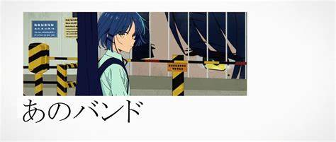

Sejarah
Awalnya band ini dibentuk oleh Nijika (drummer) dan Ryo Yamada (bassist), sebelum Kita bergabung sebagai gitaris dan vokalis. Namun, Kita tiba-tiba meninggalkan band, memaksa Nijika untuk mencari pengganti, yang membuatnya merekrut Bocchi sebagai gitaris utama baru sebelum penampilan langsung mereka. Dalam penampilan tersebut, mereka hanya membawakan lagu-lagu instrumental karena mereka masih kekurangan vokalis. Diketahui bahwa Ryo menamai band tersebut berdasarkan kata "cable tie" dalam bahasa Jepang, dan dimaksudkan sebagai plesetan. Kita bergabung kembali dengan band setelah Bocchi merekrutnya kembali ke grup, dan menyelesaikan masalah kurangnya keterampilannya yang menjadi alasan dia keluar.
Kessoku Band membawakan dua lagu pertama mereka di live house ketika diaudisi oleh Seika, sang manajer, pertama kali mereka tampil sebagai empat orang, salah satunya adalah " Guitar to Kodoku to Aoihoshi ". Band ini tampil lagi di live pertama mereka dengan penonton sebagai band beranggotakan empat orang. Penerimaan awalnya membosankan karena sedikitnya penonton akibat cuaca buruk dan penampilan mereka yang ceroboh pada "Guitar to Kodoku to Aoihoshi", tetapi menjadi lebih baik saat mereka melanjutkan ke lagu berikutnya, " Ano Band ".
Kessoku Band - Ano Band
Band ini tampil di festival budaya SMA Shuka , tempat Bocchi dan Kita bersekolah. Ini juga merupakan penampilan langsung pertama mereka di tempat-tempat besar dengan penonton umum. Sementara lagu pertama mereka " Wasurete Yaranai " berjalan dengan baik, gitar Bocchi putus selama penampilan " Seiza ni Naretara " tetapi menutupi solonya dengan mengambil cangkir sake di atas panggung dan memainkan gitar slide, membuat penonton kagum. Namun, penampilan itu tiba-tiba berakhir karena upaya Bocchi untuk melakukan stage dive berakhir dengan kegagalan dan dia dilarikan ke rumah sakit. Insiden itu menjadi viral di internet dan menjadi topik hangat bagi netizen di berbagai situs sosial. Namun ini juga berhasil mengekspos grup lebih jauh dan penampilan langsung mereka di STARRY meningkat secara signifikan di kemudian hari.
Insiden lain terjadi setelah pertunjukan langsung seorang penulis blog musik, Poison♡Yami yang menghadiri konser tersebut mengungkap identitas gitaris, Bocchi sebagai guitarhero di OH!TUBE di depan penonton, dan mengkritik band tersebut segera setelah itu dengan menuduh mereka menahan potensi sejati Bocchi. Sementara insiden ini diselesaikan dengan manajemen yang mengusir penulis tersebut, hal ini juga menyebabkan band tersebut berpartisipasi dalam kompetisi Mikakunin Riot .

Band ini mengunggah video penampilan mereka yang diedit ulang di Shuka High di OH!TUBE sebagai promosi band untuk Mikakunin Riot, di mana berita ini sampai ke salah satu band metal terkenal, SIDEROS juga. Vokalis mereka, Yoyoko Ohtsuki berhasil menyelinap untuk menonton salah satu penampilan langsung mereka sebelum ketahuan oleh Hiroi yang juga menghadiri konser tersebut. Kemudian, Kessoku Band dan SIDEROS tampil di SICK HACK solo live di FOLT sebagai pemain tamu, di mana kedua band mulai saling mengenal.
Kessoku Band mengunggah video musik pertama mereka bersama dengan lagu baru mereka, "Gloomy Goodbye" di OH!TUBE. Video tersebut mencapai 11.000 penayangan setelah periode singkat tertentu. Mereka juga memulai pertunjukan jalanan langsung reguler mereka di Shimokitazawa sebagai sarana untuk mempromosikan lagu baru mereka, yang telah mendapat sambutan baik dari para penonton.
Mereka berhasil lolos ke tahap demo review pendahuluan Mikakunin Riot dan menduduki peringkat ke-28 di tahap voting online kompetisi tersebut, yang memungkinkan mereka untuk melanjutkan ke tahap penilaian langsung yang diadakan di FOLT. Namun mereka tidak berhasil melewati tahap tersebut.
Namun setelah kompetisi, mereka menandatangani label dengan Stray Beat dengan Miyako Shiba yang secara efektif menjadi manajer mereka mulai sekarang.
Untuk cerita selengkapnya kalian bisa langsung menyaksikan anime nya disini!